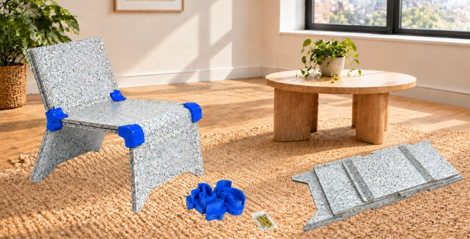
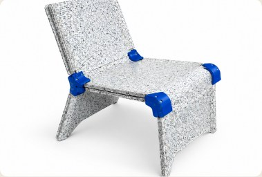
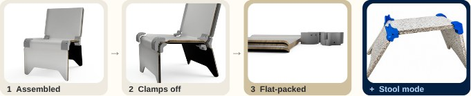

v1 frame
SaveBoard seat and back on a plywood frame. Its legs were too upright.
A recycled-board chair for renters that sets up once and flattens for moving day.

NZ homes are shrinking, and flat-pack furniture hasn't kept up.
Young renters in small urban apartments move often. But almost all flat-pack furniture from Kmart, Mocka, IKEA and Compac is MDF or particleboard, which weakens every time it's rebuilt and has no recycling route at end of life.
The opportunity: SaveBoard is made in New Zealand from recycled soft plastics and beverage cartons, and no competitor uses it for furniture. The aim was a flat-pack chair made mostly from SaveBoard that sets up once, takes everyday seating loads and flattens for moving day.
Flatmate is three kerf-bent SaveBoard panels held together by 3D-printed PETG junction clamps and M6 bolts. The clamps protect the screw points, because screwing straight into SaveBoard again and again loosens it.
Take the clamps off and the panels flatten into one slim box. Rearrange them and the chair becomes a stool.


Panels, clamps and bolts arrive in one 540 × 1230 × 70 mm box.
Fit the PETG clamps over the flanges and tighten the M6 bolts with one hex key.
Unclamp, flatten the kerf bends and stack the panels. At end of life, the board and PETG separate for recycling.
Flatmate went through several directions before the final clamped-panel design. Each model below can be rotated.
SaveBoard seat and back on a plywood frame. Its legs were too upright.
The same frame with the back folded flat to make a bench.
Legs angled outward for stability, and a reworked joint between the back rest and back legs.
An alternative concept: modular legs that stack like Lego to set the height, with a panel on top to make a chair or bench.
The stacking legs as a bench. The idea was dropped because the stacked joints weren't structurally strong enough.
The full A3 folio from the capstone. Click a page to open it.
Download the final model. Earlier versions and the full Fusion 360 archive are coming to GitHub soon.